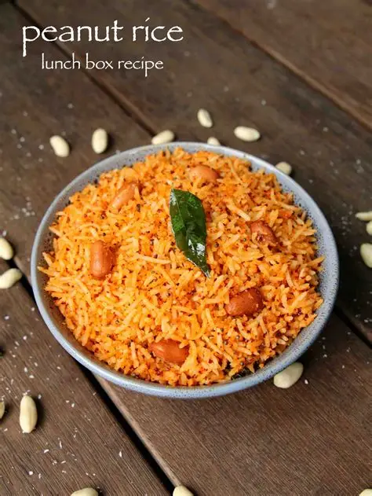

Peanut Rice
⭐⭐⭐⭐☆ 4.5 Rating | ⏱ 25 Minutes | 🍽 2 Servings
Category
Rice Dish
Difficulty
Easy
Calories
360 kcal
Cooking Style
Indian
📋 Ingredients
- 2 cups cooked rice (cooled)
- 1 tbsp oil
- 1 tsp mustard seeds
- 1 sprig curry leaves
- pinch of hing
- Salt to Taste
🍳 Required Utensils
- Heavy-bottomed pot/cooker
- frying pan/skillet
- spice grinder/mortar
- silicone spatula
- wide cooling plate
📖 Introduction
Peanut Rice paired with classic Ghee Rice offers a vibrant South Indian thali combination—bringing together the rich, aromatic sweetness of clarified butter and whole spices with the nutty, savory crunch of freshly ground spiced peanut powder.
🔬 Principle
Relies on dry-roasting raw peanuts, sesame seeds, and lentils into a coarse spiced powder (podi) which is then gently folded into cooled, pre-cooked rice to preserve crunch and flavor.
👨🍳 Procedure
- Roast Spices & Peanuts
- Unlocks nutty, earthy flavors
- In a dry skillet over medium heat, roast raw peanuts until skin cracks and darkens.
- Next, dry roast chana dal, urad dal, dry red chillies, and sesame seeds until fragrant.
- Allow the roasted mixture to cool completely.
- Pulse in a grinder to a coarse, textured powder along with salt and a pinch of hing.
- Heat 1 tbsp oil in a pan, pop mustard seeds and curry leaves.
- Add cooled cooked rice and 3-4 tablespoons of the ground peanut powder.
- Toss gently on low heat for 2 minutes until evenly mixed.
⚠ Precautions
- Contains common allergens (peanuts, tree nuts).
- High overall calorie density—portion control is recommended for calorie-conscious diets.
💡 Chef Tips
- Serve both rice varieties alongside hot, puffed pooris and a rich vegetable kurma or potato sagu—the gravy acts as an ideal bridge between the puffed bread and distinct rice textures.
- Always pulse the peanut mixture in short bursts. Over-grinding releases oil from the peanuts and turns the dry powder into a sticky paste.
- Keep the peanut rice dry so it can be easily scooped up using crisp pieces of poori.
🥗 Nutrition Facts
| Nutrient | Amount |
|---|---|
| Calories | 490 kcal |
| Protein | 10 g |
| Carbohydrates | 58 g |
| Fat | 24 g |
🍽 Serving Suggestions
- Pair both rice dishes with mixed vegetable kurma, coconut chutney, potato masala, or cucumber raita.
- Serve along with fried papadums, hot poori baskets, and mango pickle for a full South Indian feast thali.
🌿 Health Benefits
- Peanuts provide plant-based protein, healthy monounsaturated fats, and niacin.
- Ghee supports gut lining health and assists in absorbing fat-soluble vitamins.
✅ Result
A dynamic rice dual-offering—featuring soft, buttery, cardamom-scented Basmati rice on one side and a crunchy, savory, roasted nut-and-spice rice on the other.
🎥 Watch Recipe Video
Learn the complete recipe by watching the step-by-step video.
▶ Watch on YouTube